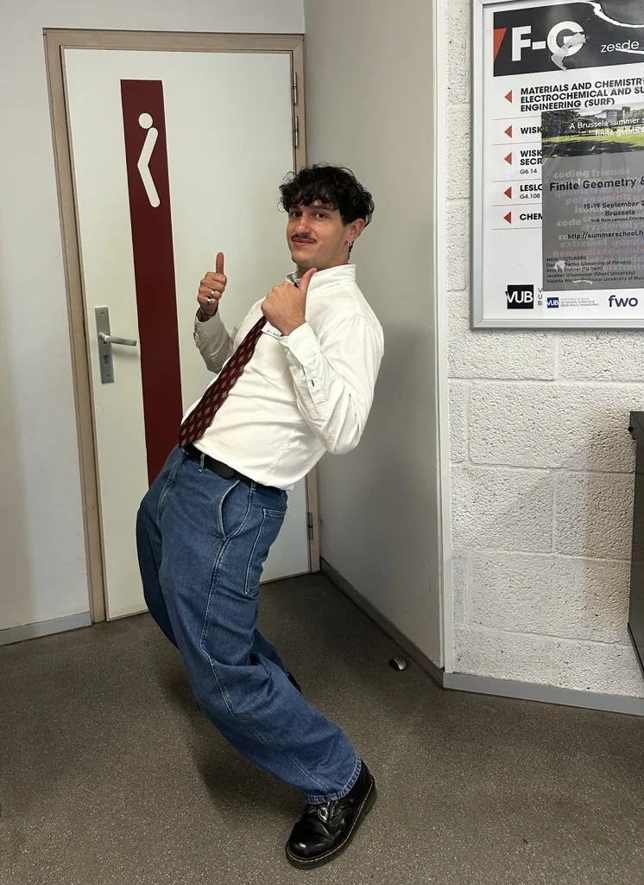

01.1
Finite geometry
Scattered subspaces, linear sets and spreads: geometric structures over finite fields.
Mathematics · Naples, Italy

Finite structures.
Unexpected connections.
I'm a PhD student in Mathematics at the University of Naples Federico II. I explore the meeting point of geometry, algebra and coding theory: structures over finite fields and the error-correcting codes they produce.
01 / Research
My research centres on algebraic and geometric structures over finite fields, and their connections to error-correcting codes and combinatorial problems.
7 points, 7 lines. Any two points lie on exactly one line, and any two lines meet in exactly one point.
Scattered subspaces, linear sets and spreads: geometric structures over finite fields.
Linearized polynomials, scattered binomials and quadrinomials, Drinfeld modules.
Rank-metric and MRD codes, sum-rank codes and additive codes.
02 / Papers
Publications, preprints, and work in progress.
arXiv:2611.08627November 2026
arXiv:2610.32737October 2026
arXiv:2610.16803October 2026
arXiv:2610.08237October 2026
arXiv:2609.05305September 2026
arXiv:2609.01484September 2026
arXiv:2607.23156July 2026
arXiv:2605.05455May 2026Play the game
Linear Algebra and its Applications2026
arXiv:2603.27748March 2026
Annali di Matematica Pura ed Applicata2026arXiv
Algebraic Combinatorics2025
arXiv:2509.03186September 2025
Finite Fields and Their Applications 1032025arXiv
arXiv:2502.11666February 2025
Annali di Matematica Pura ed Applicata2024
Try another word, or clear the filters.
L. Bastioni, A. Giannoni, G. Micheli
03 / About
Recently
New preprint: evasive subspaces, minimal rank-metric codes and subspace designs via auxiliary fields.
Three new preprints: maximum 2-scattered subspaces of V(r, q6), with D. Bartoli, F. Ghiandoni, G. Marino and A. Neri; the weak cylinder conjecture for polynomial graphs, with D. Bartoli; and a probabilistic construction of maximum h-scattered subspaces, with A. Neri.
Two new preprints: codes from Drinfeld modules, with G. Micheli and M. Papikian, and F-sets of arbitrary finite width.
New preprint on the extremal gap for scattered q-systems.
With L. Bastioni and J. Lobillo-Olmedo: Tic-Tac-Toe on finite affine spaces. You can play it on affinetictactoe.com.
New preprint: an infinite family of non-extendable MRD codes.
Academic journey
University of Naples Federico II · Italy
Supervisor: Giuseppe Marino · Co-supervisor: Daniele Bartoli
University of South Florida · USA
Host: Giacomo Micheli
KIMSI, Changsha · China
Host: Yue Zhou
University of Perugia · Italy
110/110 cum laude · Thesis: Construction of Scattered Sequences
University of Perugia · Italy
110/110 cum laude · Thesis: Ternary rings associated to finite projective planes
04 / Contact
For research, collaborations, or a mathematical question.
I'd be happy to hear from you.